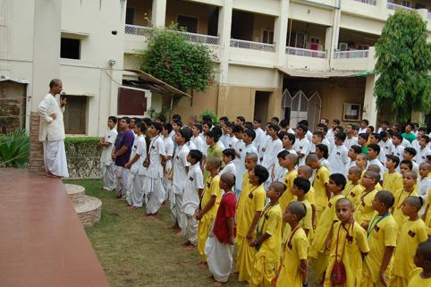
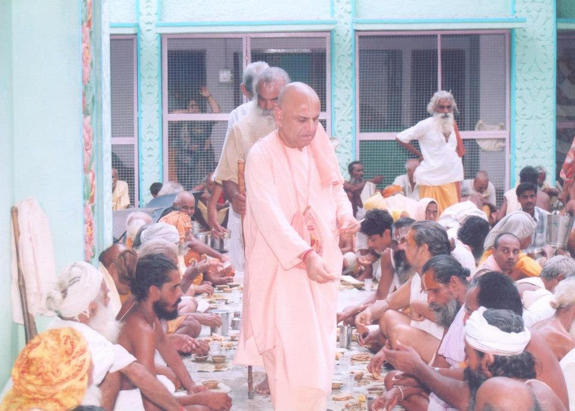

Quotes by Maharaj ji
🔸 If one wants success in their life, one should take refuge in
Srila Prabhupada. 🔸 The Lord is everything to us. Everyone has to
put their mind at His feet. No one in this world can be considered
our own. 👉 Chant so much to exceed all limits, Even Yamraj should
cancel the account (of karma).
🔸 Currently, everyone is in the shelter of their mind. It is not
appropriate. 🔸 One does not have to chant to show off. One should
chant for own welfare. One has to do bhakti with selfless devotion
for the welfare of self. 🔸 The biggest problem is (repeated cycles
of) birth and death. The human body can get out of the birth and
death cycle.
🔸 हमारे कर्म कटेंगे कृष्णभक्ति एवं कृष्णसेवा के द्वारा। 🔸हमारा
मिशन आत्मा को बचाना है जो कि श्री कृष्ण की शरण में आने से होगा।
🔸हमारा कल्याण भगवान श्री कृष्ण का भजन करने से होगा। हमे भक्ति करके
अपने आप को भगवान के साथ जोड़ना है।
Press
Maharaj Ji blessed Narender Modi and inspired him to read Bhagavad Gita and follow Sanatana Dharm.
Projects
-
Iskcon Udhampur Gurukul
Gurukul started by maharaj ji in 0000. Students learns about loving devotional service and how to become a good person with great character.
-
Hare Krishna Food For Life, Udhampur
Food for life started by maharaj ji in 0000. Giving food to needy people and helping them to become devotees through krishna prasadam.
Photos